Guardians secure a federation. A liquidity provider connects it to the outside.
Manifold Liquidity Provider is the software a provider runs next to a Lightning gateway. When a new federation asks, it moves your sats into that federation's gateway or its stability pool, so members can pay over Lightning and hold stable value. It is plumbing: it prices nothing and charges nothing itself.
Install and pair
The provider runs on your box and is paired with one Lightning gateway: on Umbrel, the Fedimint Lightning Gateway app on top of your Bitcoin and Lightning nodes. The wizard checks it can reach the gateway and the chain before anything goes live.
Get advertised
Once a verifier has vouched for your provider key and the checks pass, the provider publishes an advertisement on Nostr. It says what you offer, never how much you hold. It disappears by itself when something breaks.
Federations ask
When an Ambassador creates a federation in the Fedi app, the app asks an eligible provider for Lightning liquidity. The provider checks the federation's guardians are verified fleets, checks your capacity, and funds it from the gateway wallet.
Earn and withdraw
Your gateway earns its Lightning fees on every member payment in and out; a stability pool position earns the pool's provider fee. Withdraw from Funds to any on-chain address.
What you need before you start
A provider is a financial role on top of an operational one. The provider software itself is light; the Bitcoin node and the Lightning node it depends on are not, and the capital you put to work is the thing that matters.
A box that runs umbrelOS, or any Linux host
Because the provider sits on a Bitcoin node, plan the same machine as a guardian: a quad core mini PC, 16 GB of RAM, a 2 TB SSD as the system disk, wired ethernet. Setting it up from scratch is covered in the Fedimint Guardian guide. It can share the box with a Manifold Fedimint Guardian. No public IP, domain or certificate is needed; everything is outbound or hole punched.
A Bitcoin node and a Lightning node
The gateway the provider allocates from runs on your own Bitcoin Node and Lightning Node apps. The Bitcoin node must be unpruned and synced, which takes days, so start it first; the Bitcoin node section of the guardian guide has the steps. The Lightning node needs open channels with real inbound liquidity, or members' payments cannot route.
A Fedimint Lightning Gateway
The provider does not run Lightning itself. It pairs with one Fedimint gateway, version 0.12 or later, and uses its wallet. On Umbrel that is the official Fedimint Lightning Gateway app, which connects to your Bitcoin and Lightning nodes by itself.With Docker you bring your own gatewayd, reachable from the provider container, with channels that actually have liquidity.
Sats to allocate
Every allocation moves your sats out of the gateway wallet and into a federation. This is capital at risk: getting it back out of a federation is a manual procedure today, not a button. Decide your capacity cap before you advertise, not after the first request.
A chain observer and relays
The provider watches the chain through an Esplora endpoint or a Bitcoin Core node, and publishes to Nostr relays. Stability pool funding needs Esplora; Bitcoin Core alone cannot serve it. The relays are the three Manifold relays:
wss://relay.dev.fedibtc.com
wss://relay.primal.net
wss://relay.damus.ioSomeone to authorize your provider
Apps only send federation details to providers a verifier has vouched for. Without an enrolled authorization the provider does not even publish an advertisement. A verifier scans your authorization request with the credential app. Arrange your verifier before you start; the FAQ lists where to ask.
Install on Umbrel
Run with Docker next to your gateway
Three official Umbrel apps carry the money: Bitcoin Node, Lightning Node and Fedimint Lightning Gateway. The provider comes from the Fedi Dev community store and pairs with the gateway. Each app's own password is its credential: the gateway's for pairing, the provider's for signing in.
The published image runs the daemon only. You provide the gateway, the chain observer, a persistent volume, and the environment below. The dashboard is embedded and served on the admin port.
-
Have Bitcoin Node running and synced
App Store›Bitcoin›Bitcoin NodeUmbrel's official app, powered by Bitcoin Core, pruning off. The initial sync takes days on an SSD; the guardian guide walks through it. The gateway and the provider both depend on it.
-
Install Lightning Node and open channels
App Store›Bitcoin›Lightning NodeUmbrel's official LND app. Fund it, open channels to well connected peers, and get inbound liquidity; a gateway on a node without inbound capacity cannot serve members' payments. This is ordinary Lightning node operation and outside this guide.
-
Install Fedimint Lightning Gateway and copy its password
App Store›Bitcoin›Fedimint Lightning Gateway›InstallThe official gateway app (v0.12.0), which connects to your Bitcoin Node and Lightning Node on its own. Its wallet is what the provider allocates from. Umbrel shows the app's password when you open it, and later under the tile's ⋯ › Show details: that password is the gateway admin credential the provider's setup wizard asks for.
-
Add the Fedi Dev community app store
App Store›⋯ menu, top right›Community App StoresPaste and click Add. Skip this if you already added it for the Fedimint Guardian.
https://github.com/fedibtc/manifold-umbrel-store.git -
Install Manifold Liquidity Provider and copy its password
Open the Fedi Dev store and install Liquidity Provider. Umbrel shows this app's password when you open it too. The provider's dashboard asks for it on the Enter your operator token screen: paste it there.
Never rotate the token from the dashboard on Umbrel. Umbrel keeps showing the original password, and you would lose the only copy of the new one.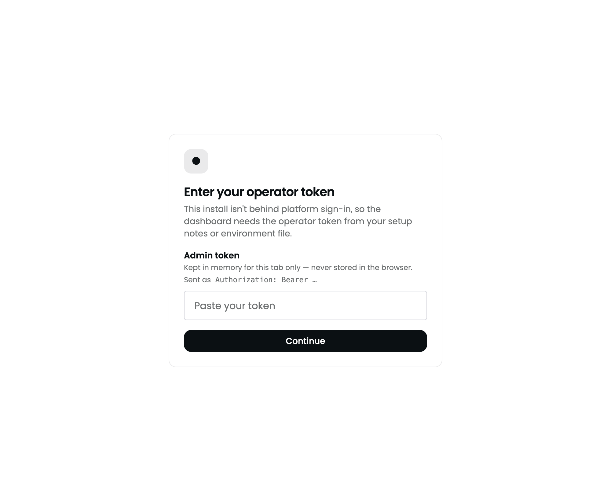
-
Have a gatewayd running
A Fedimint gateway, version 0.12 or later, with an admin API the provider can reach and a Lightning backend that has funded channels. The provider holds the gateway's admin credential and uses its wallet; it never manages the gateway itself.
-
Start the daemon
The image is
ghcr.io/fedibtc/manifold-flip, published on every merge. Select the environment explicitly, set a bootstrap token, mount the data directory, and publish the public port as UDP.docker run -d --name flip --restart unless-stopped \ -e FLIP_MANIFOLD_ENVIRONMENT=production \ -e FLIP_BOOTSTRAP_ADMIN_TOKEN=change-me \ -e FLIP_PROVIDER_NOSTR_SECRET_KEY=<64 hex chars, keep it> \ -p 127.0.0.1:8173:8173 \ -p 8174:8174/udp \ -v /srv/flip:/var/lib/flip \ ghcr.io/fedibtc/manifold-flip:masterPort 8173 is the admin API and dashboard: keep it on loopback or behind your own access control. Port 8174 is the public liquidity API over Iroh, UDP only. The provider key is your identity; the advertised address is derived from it and survives restarts. Leave the key out and the daemon waits until you install one through the API.
-
Open the dashboard
Browse to
http://127.0.0.1:8173and enter the bootstrap token. Rotate it once from the CLI when you are set up; the rotated token replaces the bootstrap one.
The seven step wizard
Nothing is saved until the last step. Every earlier step is a draft; Review runs the checks as a dry run and only then applies. You can reopen any of these later under Settings.
-
STEP 1
Network
The Bitcoin network this provider operates on: Bitcoin. Saving re-validates that the gateway wallet runs on the same network before it takes effect.
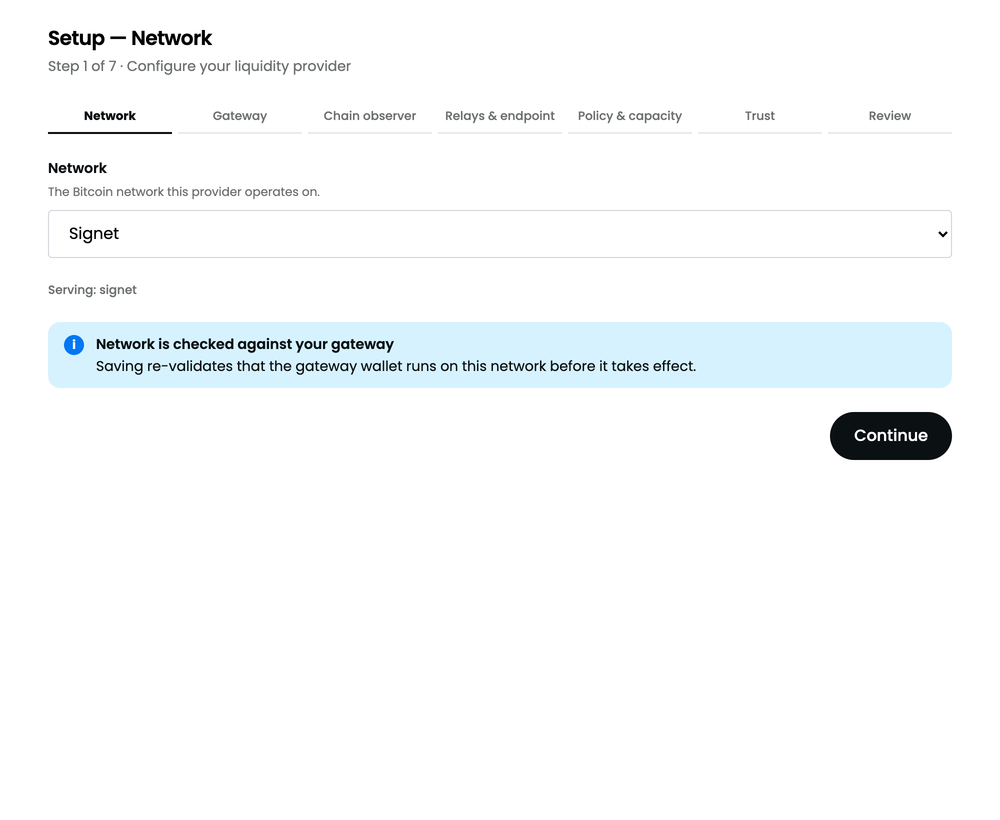
-
STEP 2
Gateway
Pair the provider with its gateway: a display name, the gateway's Admin URL, and its Admin credential. Click Connect to gateway; the probe fills in the gateway identity and shows the Lightning alias it reached. Identity metadata is optional key/value pairs published with your gateway identity.
Field Value Gateway name anything, for example umbrel-gateway Admin URL http://fedimint-gateway_gatewayd_1:8178(the Fedimint Lightning Gateway app on the same Umbrel)Admin credential the Fedimint Lightning Gateway app's password 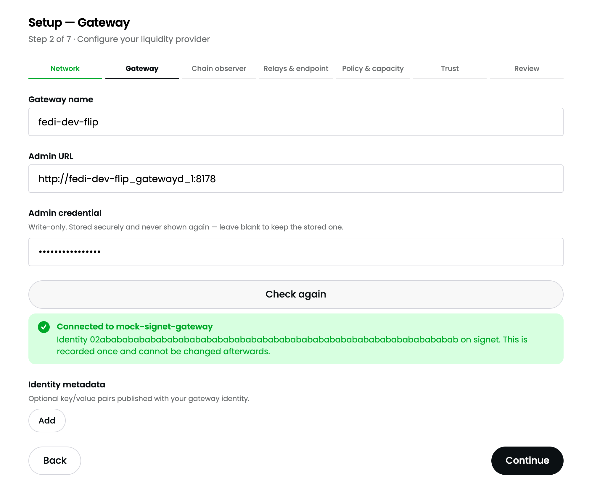
-
STEP 3
Chain observer
Where the provider watches for on-chain confirmations of its own sends. Esplora with a URL, or Bitcoin Core with RPC username and password. If you offer stability pool funding, use Esplora with
https://mempool.space/api(or your own Esplora): the target federation's wallet client has no Bitcoin Core path. Otherwise Bitcoin Core works too, with the URL, username and password from your Bitcoin Node app under Connect › Bitcoin Core RPC.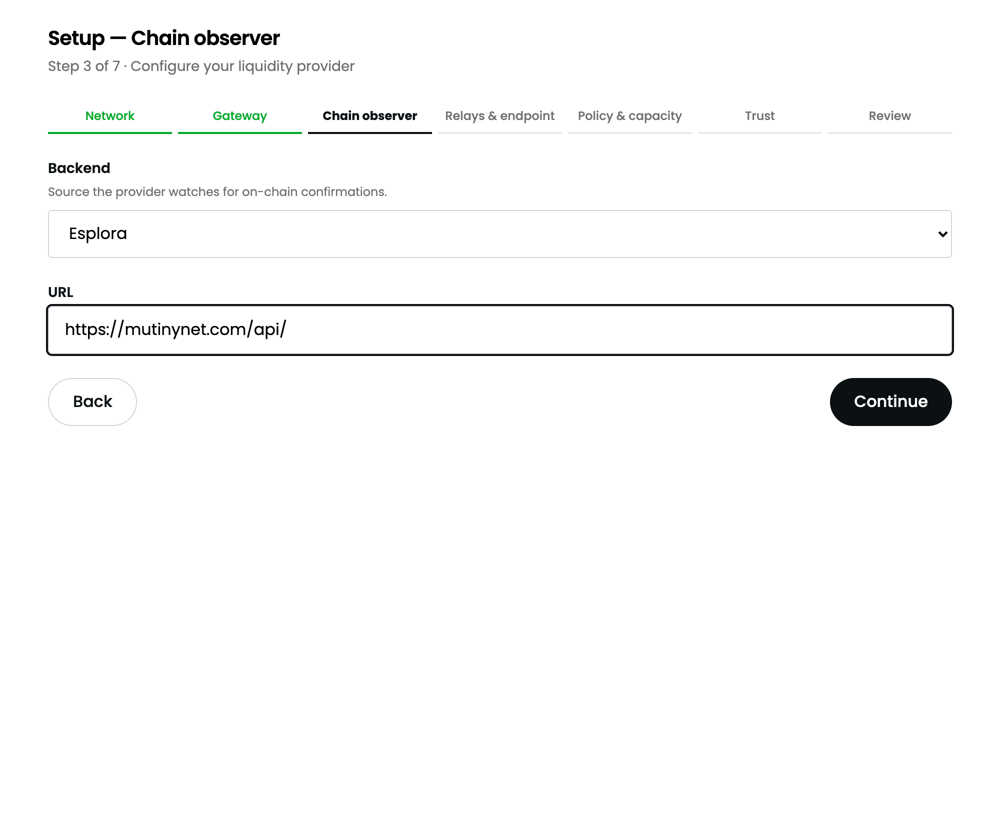
-
STEP 4
Relays & endpoint
Relays are the Nostr relays your advertisement is published to and where holder authorizations are read from. Add the three Manifold relays:
wss://relay.dev.fedibtc.com,wss://relay.primal.netandwss://relay.damus.io. The Advertised address is set by the daemon once its transport binds, derived from your provider key, so there is nothing to type. Republish interval is how often the advertisement is re-signed and refreshed on the relays. Leave Advertise readiness on so the advertisement goes out as soon as setup is applied.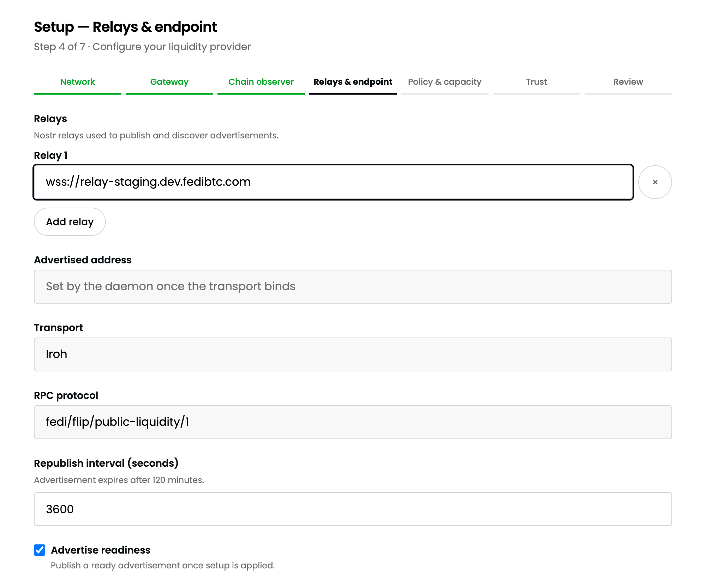
-
STEP 5
Policy & capacity
Capacity mode decides how much the provider will commit: everything available in the gateway wallet, or a cap in sats. Supported sources is what you offer: Gateway, Stability pool, or both. The Fedi app asks for gateway liquidity by itself after a federation is created; stability pool requests are arranged case by case. Alerts set the low balance warning and the critical threshold the Overview will flag. Trusted attesters lists whose badges you accept on the guardians of federations you fund, with either every guardian trusted or a consensus majority. Fedi publishes the current issuers in the manifold repository (crates/manifold-environment/src/lib.rs, the production issuer list); add the ones you accept.
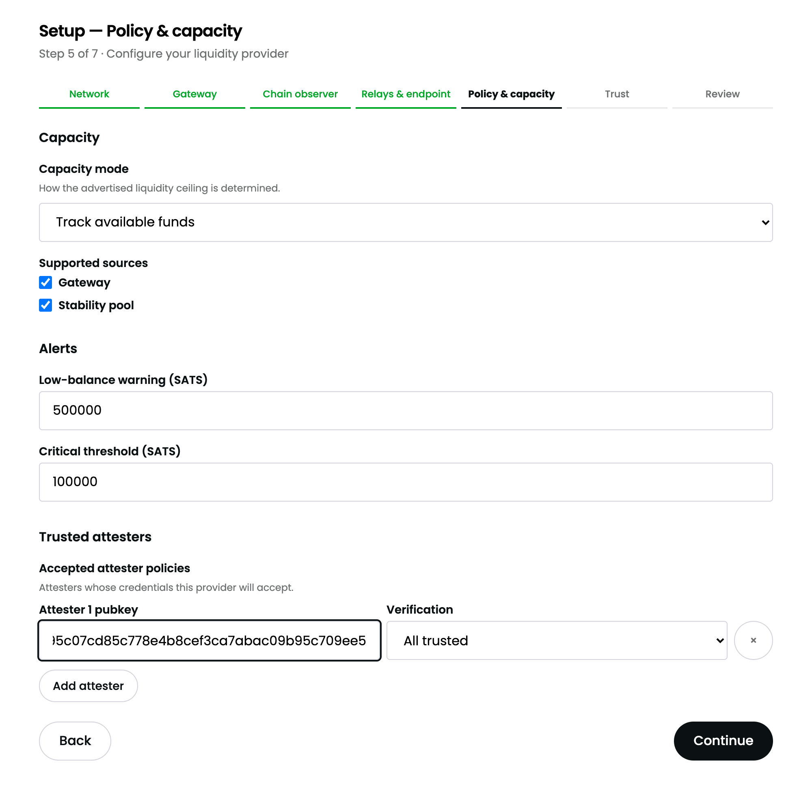
-
STEP 6
Trust
Two different things live under "trust", and this screen handles the first. Attestations are the issuer authority documents that describe whose badges you accept: click Choose file, pick the issuer's authority JSON, and Install. The authority files for Fedi's issuers are in the manifold repository at crates/manifold-environment/fixtures, one
production-issuer-authority-…jsonper issuer, matching the keys you listed in step 5. Until one is installed the screen reads "No attestations installed yet".The second thing is your own badge, and it is not done here. Your provider public key appears on the Advertisement page under Listing once setup is applied; on Umbrel it is derived from the device, so it survives a reinstall. Your verifier signs an authorization over it with the credential app and publishes it; the provider enrolls it the next time it reads the relays. The Advertisement page's ready or not ready status is where you see the result.
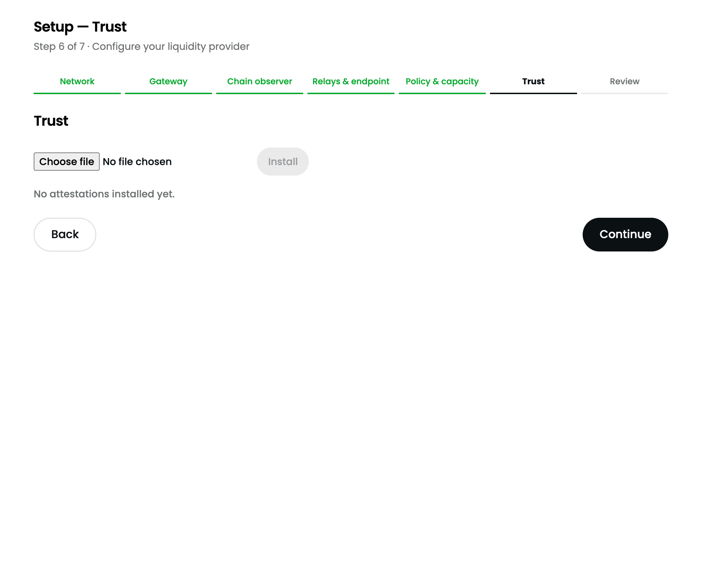
-
STEP 7
Review
The configuration summary and a Validation dry run: gateway reachable and on the right network, chain observer answering, relays configured. Nothing is saved until you click Apply & go live; Re-run validation repeats the checks. On success the screen says You're live: the advertisement is being published, Federation Ambassadors and Guardians can discover your liquidity, and the Overview takes over.
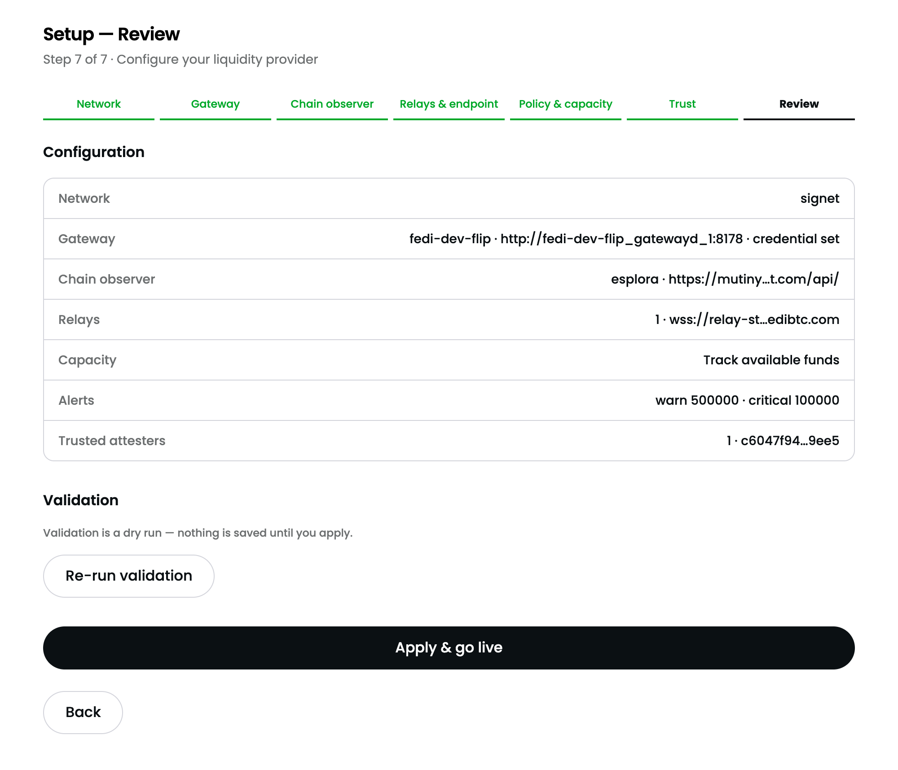
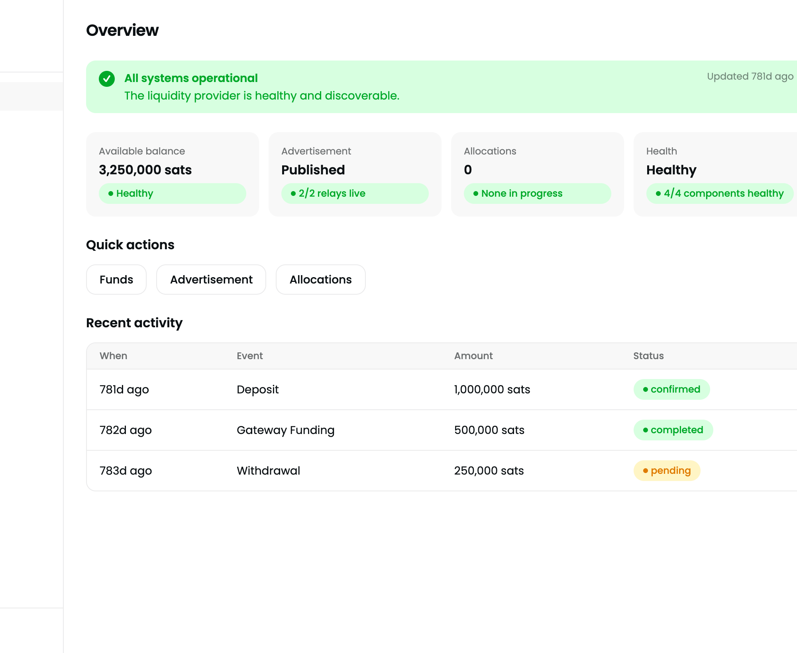
Overview. Four tiles: Available balance, Advertisement, Health and Allocations, plus a banner with the one thing that needs attention, if anything does.
Put sats in the wallet the provider allocates from
The provider never moves money in on its own. You top up the gateway wallet on-chain, and everything it can economically commit becomes available to allocate, minus a fee reserve it keeps back for its own sends.
-
Funds › Top up
Click Top up. The provider asks the gateway for a fresh deposit address and shows it with a QR code, then watches the chain for your deposit.
-
Send sats to it
Send from any wallet you control, on-chain. The provider counts the deposit once it has the confirmations your funding policy requires, so allow for that.
-
Watch it land
The Watching for your deposit panel tracks the top-up; the Balance breakdown then shows what is available, what is reserved for fees, and what is committed to allocations in flight. Set your low balance and critical thresholds so the Overview warns you before you run dry.
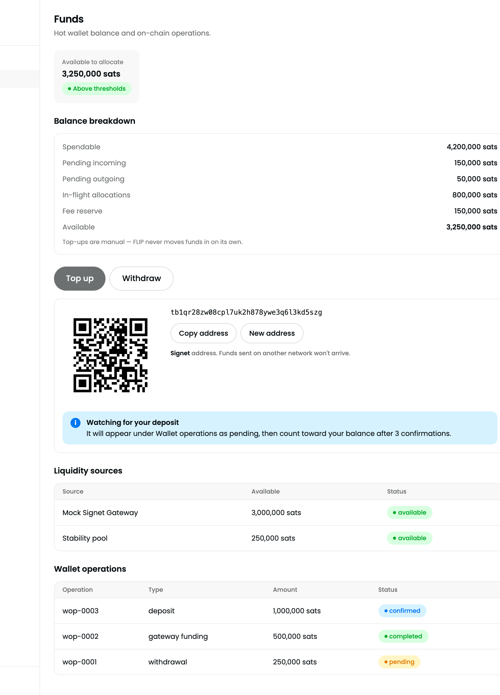
Funds with a top-up in progress. Available to allocate on top, the top-up panel with its deposit address, the withdrawal form, the balance breakdown, and recent wallet operations.
The advertisement is the only public signal
The provider publishes one signed document to the relays: what you offer, your policy, your endpoint, and the badge that vouches for you. Never your balance. It publishes only while every check passes and withdraws itself when one fails, so there is no public "not ready" state.
- Badge enrolled. Your verifier has published the authorization for your provider key. Until one is enrolled, the Advertisement page reads Not ready to publish and lists why.
- Gateway, chain observer and relays reachable. The same checks as Review, repeated every minute. A dependency going away withdraws the advertisement automatically.
- Advertise readiness is on in Settings › Relays & endpoint.
- Confirm. The Advertisement page shows Published, the Listing card with your provider key, sources offered and expiry, and a Relays table with each relay reporting the publication. The Overview tile agrees.
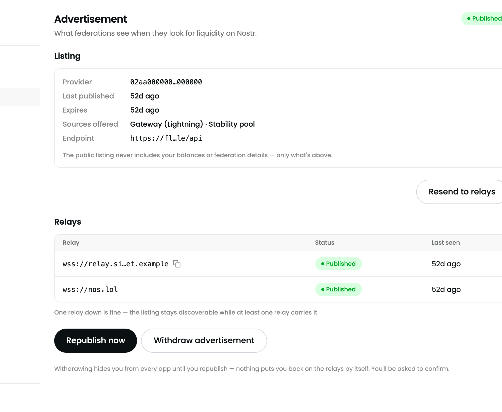
What happens when a federation asks
You do nothing. The request, the checks and the funding are automatic. What you get is a row on the Allocations page and, sometimes, a decision.
-
An Ambassador creates a federation
Right after the guardians form it, the Fedi app looks for eligible providers on the relays: advertised, badge verified, right network, offering the source it needs. Among equals the choice is deterministic. It then sends the private details, the invite code among them, to one provider only.
-
The provider verifies before it commits
Every guardian of that federation must be a verified fleet, the federation must be endorsed by one of them, and the requested amount must fit your capacity. Any failure is a signed rejection. A request is all or nothing: if any requested source cannot be funded, none is.
-
Funding runs in the background
Gateway: connect the gateway to the federation, get a deposit address, send on-chain from the gateway wallet, watch it confirm. Stability pool: send, peg in to the federation, deposit as a provider, watch. The release envelope targets six hours for a gateway allocation and twelve for a stability pool one, waits on dependencies excluded.
-
Read the row
Each allocation shows the federation, the committed sats and a status: pending, running, completed, failed, cancelled, or action required. Only the last one needs you: open it and either Retry funding step or Cancel. One allocation per federation per source, and no automatic top-ups; more liquidity later means a new request from the app.
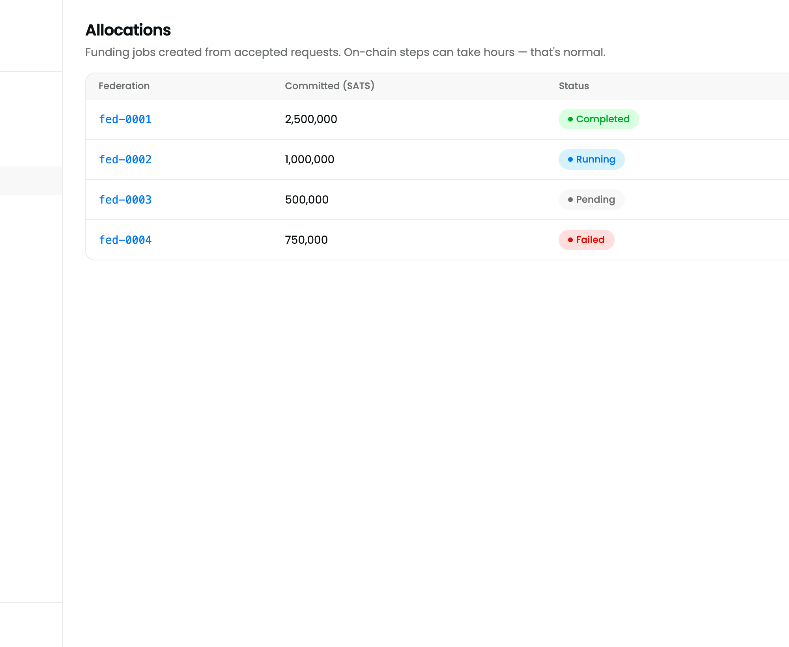
Allocations. Completed, running, pending and failed side by side.
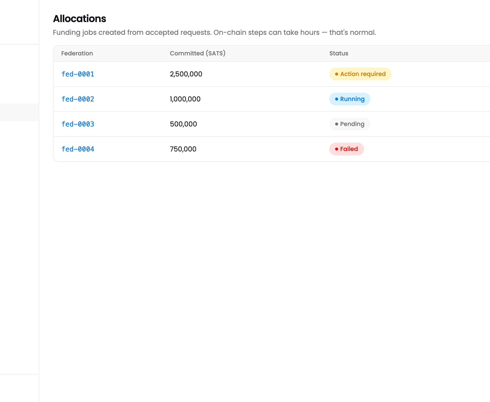
Action required. A stalled funding step with its reason, and the two buttons that resolve it.
The provider charges nothing. The gateway and the pool do.
There is no price, payment or marketplace inside the provider. Your income comes from the two things it funds.
Lightning fees on the gateway
Every time a member of a federation you serve pays or receives over Lightning, it goes through your gateway, and the gateway takes its fee: a base amount plus a percentage, set on the gateway itself. The fees accumulate in the gateway wallet, which is the balance the Funds page shows.
Provider fee in the stability pool
Members who hold stable value in a federation's pool pay a periodic fee to the providers who back it. The minimum rate you are willing to accept is part of your funding policy. Stability pool allocations are not requested automatically by the app today; they are arranged with the federation.
Funds: one form, on-chain, from the gateway wallet
Withdrawals come out of the same wallet allocations go into. Only the available part can leave; sats committed to allocations in flight, and the fee reserve, stay put.
-
Funds › Withdraw
Click Withdraw, then enter a Withdrawal address (a Bitcoin address you control) and the Amount (sats). The provider asks the gateway to send on-chain. A withdrawal is idempotent: a repeated request with the same intent is the same withdrawal, not a second one.
-
Follow it in wallet operations
The send appears in the Wallet operations table and moves from pending to broadcast to settled as the chain observer sees the transaction. A send that stays unconfirmed past six hours is flagged in doubt and lands in the manual review panel, where you resolve it once you know what happened.
-
Know what is not on this page
Sats already allocated into a federation's gateway or stability pool are not swept back to your wallet by the provider. Getting them out is a documented manual procedure with the Fedimint command line, not a button. Treat an allocation as money that has left, and size your capacity accordingly.
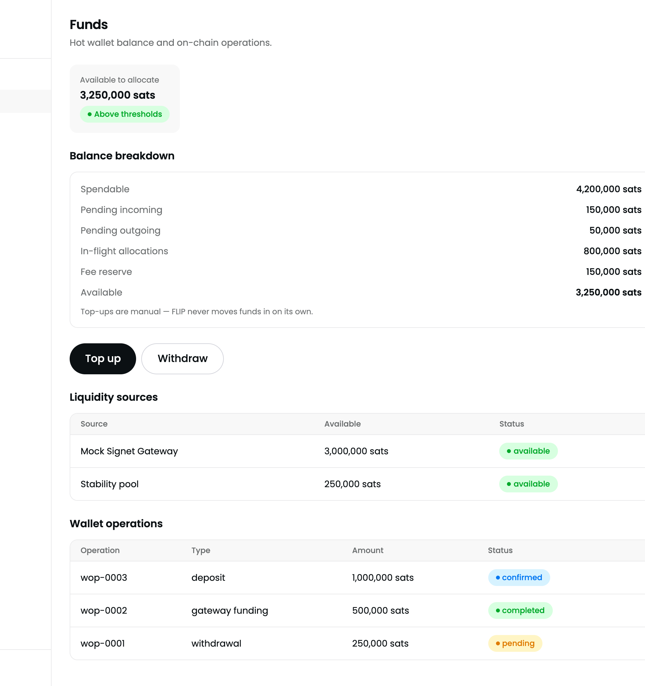
Keep the dependencies up and the box funded
An advertisement that is up is the whole job. It stays up only while the gateway, the chain observer and the relays answer, and while there is something to allocate.
Updates are manual
Umbrel shows an Update button on the app once the store has a new version.Pull the new image tag and restart the container. Data survives updates and, because the identity is derived from the device, even a reinstall keeps your provider key.
Watch the Overview
Four tiles and one banner. Available balance below your warning threshold, an expired or failed advertisement, a degraded component, or an allocation needing action all surface there first, each with a button to the page that fixes it.
Back up, and treat the archive as a secret
Settings › Backup creates a tar.gz of the whole data directory. It contains your provider key and the key that unlocks stored secrets. Store it like a wallet backup. Restoring onto a running provider is done from the same page and rolls back by itself if the restored state fails to start.
Change settings in place
Everything from the wizard is editable under Settings and takes effect without a restart. Secrets are kept separately: the gateway credential shows only as set or not set, and a blank password field keeps the stored one.
Leave the market deliberately
Advertisement › Withdraw takes you off the relays and stays that way until you republish. Use it for maintenance windows and when you are out of capital.
Keep the gateway healthy
The provider inherits the gateway's problems: a Lightning node without inbound liquidity cannot serve members' payments even when the allocation completed.
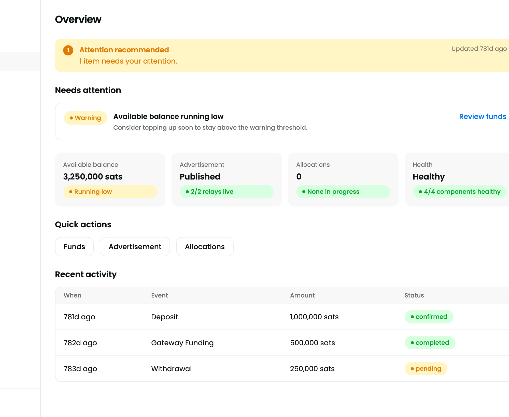
Low balance warning. The banner and tile read from your thresholds, not the raw number.
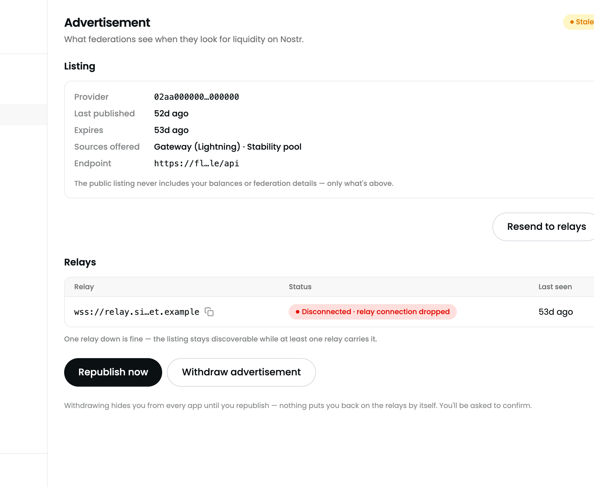
Stale advertisement. Expired on the relays; one click republishes.
When something looks wrong
http://fedimint-gateway_gatewayd_1:8178 and the Fedimint Lightning Gateway app's password; give the gateway a minute after install.Check the gateway container is up and its admin API is reachable from the the provider container.Questions people ask before they start
Do I need to run a Lightning node?
Can I choose which federations I fund?
How much will I earn?
Where are my sats at any given moment?
Can I run a Fedimint Guardian and a Liquidity Provider on the same box?
What if the box dies?
Where do I get help?
Where every statement on this page comes from
Checked against these on Sep 14, 2026.